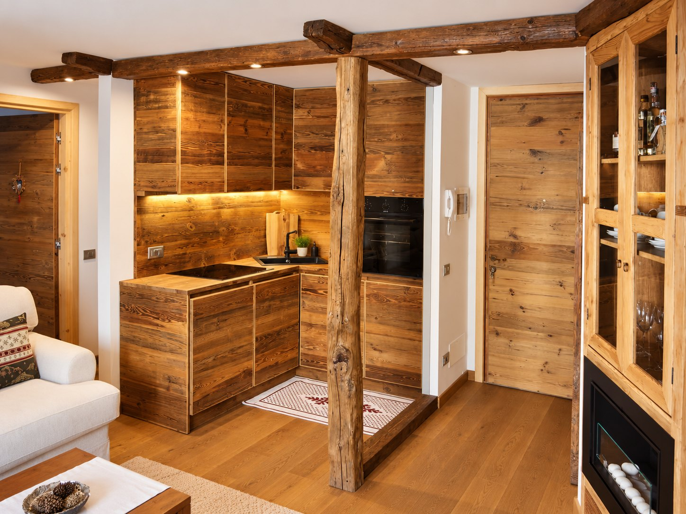

01 / LE PETIT CHALET1 / 5Le Petit Chalet
The authentic charm of a cosy Alpine retreat. Wooden finishes, an intimate atmosphere and stunning Matterhorn views invite you to slow down and enjoy the simple pleasures of mountain life.
A home for every season in the mountains, a short distance from Breuil-Cervinia.
Designed for up to four guests, Le Petit Chalet welcomes you with cosy rooms and natural wooden details inspired by traditional Alpine chalets. Its two bedrooms offer a restful place to unwind after skiing or exploring the outdoors.
The Matterhorn takes centre stage, from the first light of morning to the colours of sunset. The apartment is located near Breuil-Cervinia, an ideal base for discovering the ski area and the Valtournenche valley.
The space: a living area with kitchen, lounge and dining space, one double bedroom, one twin bedroom and a bathroom with shower. Natural wood and Alpine details create a warm and inviting atmosphere.
Amenities pictured include a coffee machine, dishwasher and ski equipment storage. Step outside and enjoy a mountain stay framed by the Matterhorn.